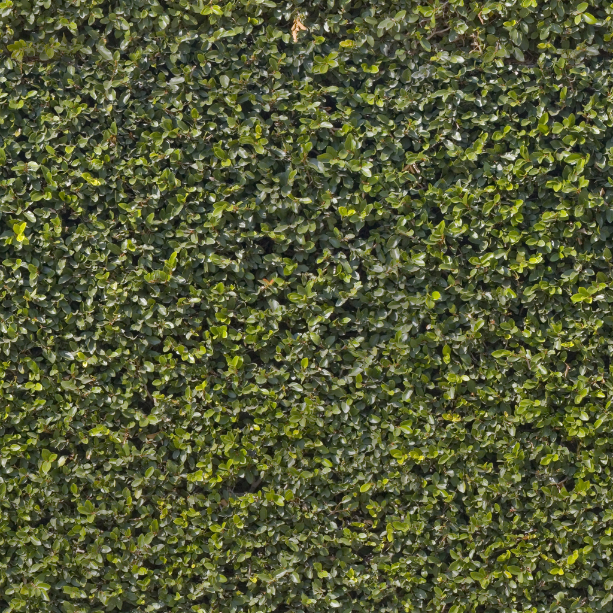

<!DOCTYPE html>
<html>
  <head>
    <meta charset="utf-8">
    <title>The McCreery Family</title>
    <meta name="description" content="McCreery Family Grave Markers at Bethel Cemetery WebVR">
    <script src="https://aframe.io/releases/0.9.0/aframe.min.js"></script>
    <script src="//cdn.rawgit.com/donmccurdy/aframe-extras/v5.1.0/dist/aframe-extras.min.js"></script>
<!--    <script src="https://unpkg.com/aframe-simple-sun-sky@^1.2.2/simple-sun-sky.js"></script>-->

  </head>
  <body>

    <a-scene background="color: black" loading-screen="dotsColor: white; backgroundColor: black">

<!--        <a-simple-sun-sky sun-position="1 1 0" fog-color="#578ABD" light-color="#6CB5FE" dark-color="#6AA3DC"></a-simple-sun-sky>-->

      
        <a-assets timeout="40000">

            <a-asset-item id="O34model" src="./assets/models/O34.glb"></a-asset-item>
            <a-asset-item id="O2model" src="./assets/models/O2.glb"></a-asset-item>
            <a-asset-item id="D2model" src="./assets/models/D2.glb"></a-asset-item>

            
            
            
<!--            -->

<!--            <audio id="birds" src="./assets/sounds/birds.mp3" preload="auto"></audio>-->
        </a-assets>
        
        <a-sky id="sky" src="#skyimg" radius="2500"></a-sky>
        
        <a-entity id="rig"
          movement-controls
          position="0 0 0"
          rotation="0 0 0">
            <a-entity camera
            position="0 1.6 0"
            look-controls="pointerLockEnabled: true"></a-entity>
<!--            <a-entity id="birdsounds" sound="src: #birds; autoplay: true; loop: true"></a-entity>-->
        </a-entity>
        
<!--        models -->
        <a-entity id=O34 gltf-model="#O34model" rotation=".663 11.272 0.15" position="-2.836 -0.015 4.276" scale="1 1 1"></a-entity>
        <a-entity id=O2 gltf-model="#O2model" rotation="0 151.79 0" position="-0.691 0 .765" scale="1 1 1"></a-entity>
        <a-entity id=D2 gltf-model="#D2model" rotation="0 135.63 0" position=".862 0.016 0.54" scale="1 1 1"></a-entity>
       
<!--        lighting -->
        <a-light type="ambient" color="#BBB" castShadow="true" intensity="2"></a-light>
<!--
        <a-light light="type: spot; color: #EEE; intensity: 4" position="-1 1 -0.625" target="#V"><a-entity id="V" position="2.15 -0.014 -0.169" visible=""></a-entity>
        </a-light>
-->

<!--        <a-light type="ambient" color="#BBB" castShadow="true" intensity="1" target="#R4 #C9 #V23"></a-light>-->
<!--
        <a-light type="spot" color="#BBB" castShadow="true" intensity="4.5" angle="20" position="0 2 0" 
                 decay=".2" distance="5" target="#left">
        <a-entity id="left" position="-4.304 -1 -1.736" visible=""></a-entity></a-light>
-->
        <a-text align="center" value="Mary Ann McCreery
                                      Born Unknown
                                      Died June 6 1873" 
                position="-1.168 1 .331" rotation="0 125 0" scale=".3 .3 .3" color="#919191"></a-text>
            <a-text align="center" value="John  McCreery
                                      Born 1790
                                      Died Sept. 7 1879" 
                position="0.017 1 .789" rotation="0 180 0" scale=".3 .3 .3" color="#919191"></a-text>
        <a-text align="center" value="Rachel McCreery
                                      Born Unknown
                                      Died Feb. 16 1854" 
                position=".789 1 .547" rotation="0 -125 0" scale=".3 .3 .3" color="#919191"></a-text>

<!--        grass -->
        <a-plane id="grass" material="src:#grassimg; repeat:30 30" rotation="-90 0 0" scale="70 70 1" color="#384325"></a-plane>
<!--        color:#314106;-->
    </a-scene>
  </body>
</html>